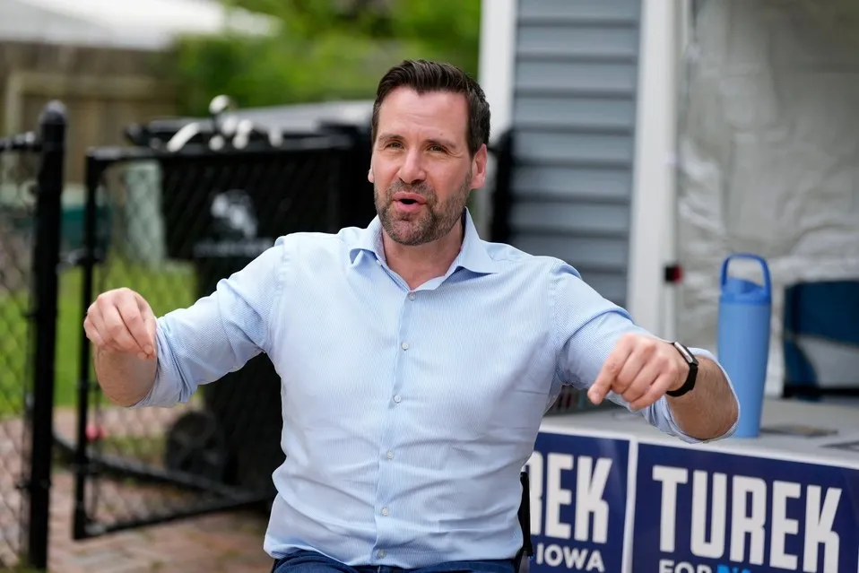

Breaking News
 June 3
June 3
by Olivia Bennett
Josh Turek won Iowa’s Democratic Senate primary, defeating Zach Wahls and setting up a nationally watched general election battle against Ashley Hinson.
Iowa Democrats have chosen Josh Turek as their nominee for the U.S. Senate, ending one of the party’s most closely watched primary fights of the 2026 election cycle. Turek defeated state Senator Zach Wahls in a race that exposed a familiar Democratic divide. Moderates argued the party needs candidates who can survive in Republican-leaning states. Progressives pushed for a sharper ideological message. Iowa voters settled the argument, at least for now. The stakes were unusually high because the seat is open. Republican Senator Joni Ernst’s decision to retire transformed Iowa into a major Senate battleground almost overnight. Turek entered the race with strong backing from national Democratic organizations and outside groups that poured millions into advertising and voter outreach. The primary became one of the most expensive Democratic contests in recent Iowa history. A former Paralympic wheelchair basketball player and current state representative, Turek campaigned as a pragmatic Democrat focused on economic issues, health care and crossover appeal. His message was straightforward: Democrats cannot win Iowa by speaking only to their own base. That argument carried weight in a state that has steadily drifted toward Republicans in recent election cycles. The victory now places Turek at the center of one of the country’s most closely watched Senate races. Democrats believe his biography, moderate profile and statewide appeal could make the race more competitive than many expected.
The race between Turek and Wahls became more than a contest between two candidates. It evolved into a broader debate over the Democratic Party’s future in states like Iowa. Wahls entered the race with strong support from progressive activists and liberal organizations. He is nationally known for his LGBTQ advocacy and campaigned on a more confrontational political message aimed directly at Republican leadership. Turek took a different approach. He framed himself as a candidate focused less on ideological battles and more on winning statewide elections in difficult political territory. The contrast was clear. Democrats had to rally voters with strong policy positions, Progressives said. Ideological purity might excite activists, but it would alienate the independents and swing voters Democrats required to win statewide, Moderates said. Money was a major factor in the outcome. National Democratic groups invested heavily in Turek’s campaign, fueling criticism from some activists who questioned the growing influence of outside organizations in Iowa politics. Turek leaned heavily on themes of electability and unity. Supporters highlighted his experience as a Paralympic gold medalist, his life with spina bifida and his legislative record in Iowa. Wahls said Democrats need to be more aggressive in 2026, and to focus on progressive priorities.The result suggests Iowa Democrats prioritized broad appeal over ideological confrontation. Still, the race also demonstrated that progressive activism remains a powerful force inside the party.
The primary battle is over. The harder campaign begins now. Turek will face Republican Representative Ashley Hinson in the general election. Hinson secured the Republican nomination with strong backing from party leadership, including former President Donald Trump. Open Senate seats rarely stay under the radar. Iowa’s race quickly became one of the most heavily monitored contests in the country after Ernst announced her retirement. Republicans enter the race with structural advantages. Iowa has leaned increasingly Republican in recent statewide elections, and Hinson already holds significant name recognition from her years in Congress. Democrats believe Turek could complicate the picture. His campaign plans to focus heavily on economic concerns, health care, agriculture and rural development. Those issues still carry enormous political weight in Iowa, where statewide elections often hinge less on national ideology and more on local credibility. Both candidates are expected to present themselves as defenders of Iowa values while offering sharply different visions for the state’s future. Outside money is almost certain to flood the race. National political organizations from both parties view the seat as strategically important in the broader fight for Senate control. The contest now shifts from an internal Democratic argument to a full-scale general election battle with national consequences.
The Senate race was only part of a chaotic election night in Iowa. The state’s gubernatorial primary produced one of the evening’s biggest surprises after Republican Governor Kim Reynolds decided not to seek reelection. Republican voters selected Zach Lahn as their nominee, defeating Trump-endorsed Representative Randy Feenstra. That result immediately drew national attention. Trump-backed candidates have dominated much of the 2026 primary season. Lahn’s victory showed that Iowa Republicans were willing to reject a Trump endorsement in favor of a candidate running on a more independent message. On the Democratic side, Rob Sand advanced unopposed and will face Lahn in November. Sand remains the only Democrat currently holding statewide office in Iowa, making his gubernatorial campaign especially important for a party struggling to regain footing in the state. Several congressional races also attracted national attention as Democrats attempt to rebuild competitiveness in Iowa’s House districts. Taken together, the Senate race, governor’s race and congressional contests are expected to trigger massive political spending and nonstop campaign activity through November. The primary season settled the nominees. It solved nothing else. Now Iowa moves into a general election cycle likely to shape both state politics and the national balance of power.

Olivia Bennett is a U.S. political correspondent reporting on federal policy, election developments, and national governance issues.